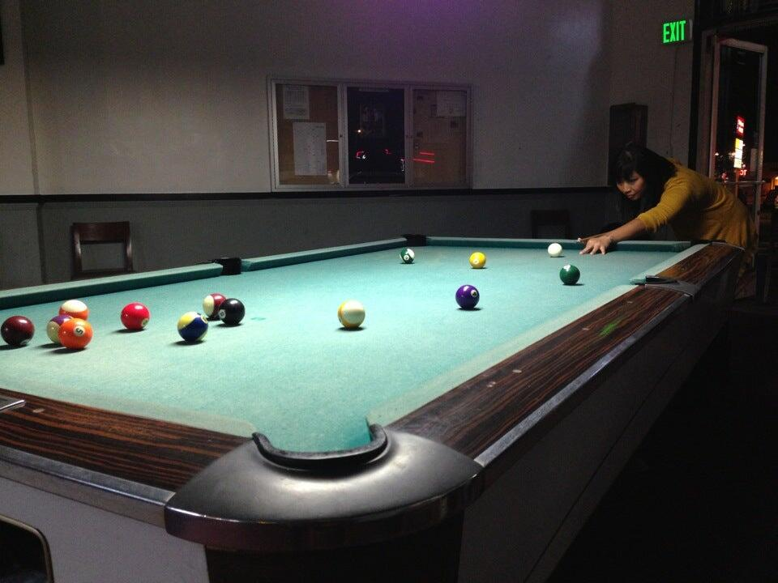

A little practice.
Work on your break, take your time with a shot, or get a few racks in. Call for current hourly rates.
MISSION STREET & SAN PEDRO ROAD
Pool by the hour. A few games with friends. A place in Daly City to settle in at the table.
Read about the hall on Google
1 San Pedro Road, Daly City
Daily, 3 p.m.–midnight
Tuesday in-house league
AT THE TABLE
A neighborhood pool hall just off Mission Street, with hourly table time for solo practice and games with friends.

TUESDAY LEAGUE
Town & Country is a Tuesday in-house league location in the BCA Pool League directory. Contact the hall for the current session, start times and joining details.
Ask about the leagueView the league directoryFROM THE PLAYERS
Read players' experiences, see their photos and explore the hall's Google Maps listing before your visit.
Read Google reviewsGoogle rating and review count reported by The Pool Fool. This is a published snapshot; Google may show a newer score or count.
BEFORE YOUR FIRST GAME
Tables are available by the hour. Call (650) 992-7900 for current rates and available tables.
A quick call is the best way to check whether the hall has space for your group and ask about table arrangements.
Contact the hall about the current Tuesday in-house league session. The team can confirm the schedule and the next steps for joining.
The address is 1 San Pedro Road, at the corner of Mission Street in Daly City. Use the map below for directions.
ON THE CORNER IN DALY CITY
Call to confirm before a late visit.
Open directions in Google Maps